爪破魔塔 美術方向（2026-10-06）
先看現在長什麼樣，再看我用 Codex 生的方向稿。方向稿只是「往哪個方向改」的參考，不是直接拿來用的素材；真的要做，會拆成框、底圖、橫幅這些零件讓程式去拼，牌上的字照舊由程式寫。
一、卡牌
現況
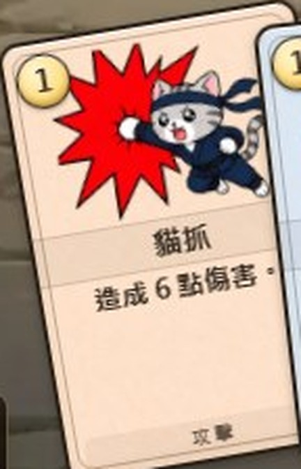
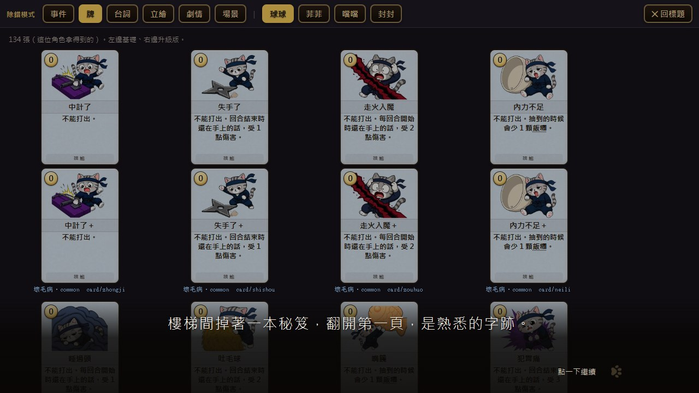
我看到的四個問題
- 下半截空白：規則文字區是「有多少空間就撐多大」，短文字的牌看起來像沒畫完。
- 插圖像貼紙：貓的圖是去背的，後面沒有場景，跟紙的關係只是「貼上去」，沒有一張畫的感覺。
- 框沒有質感：現在是兩條細線，稀有度靠換邊框顏色。之前試過的雕花木框太寬，放不下字，被收起來了。
- 牌名與類型標籤是扁的：牌名只有一條淡底，「攻擊／技能」是一行小灰字。
兩個方向稿
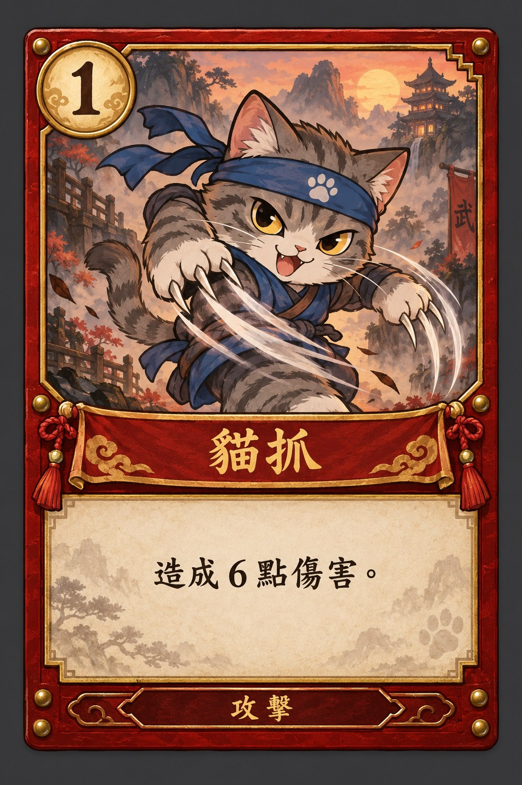
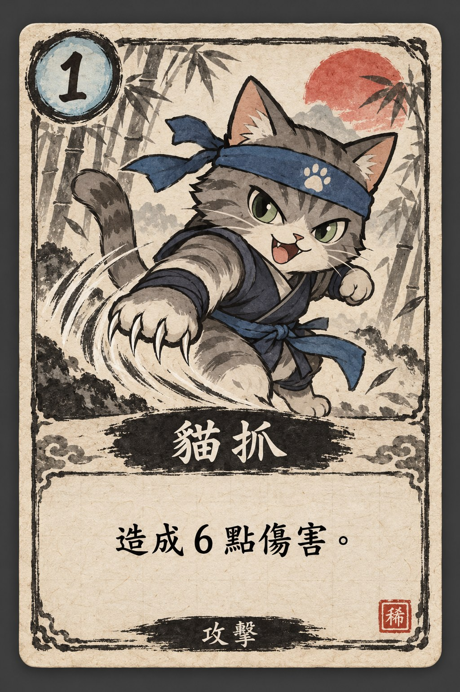
真的要做會怎麼做
- 433 張貓的插圖不重畫，照用。改的是插圖後面的「底圖」、牌框、牌名橫幅、文字區。
- 底圖：攻擊／技能／能力三種各生 2～3 張（山水、竹林、夜空這類），貼在插圖後面，貓就變成站在畫裡。
- 牌框：生成三種類型 × 三種稀有度的框，切成九宮格讓程式拉伸。框寬控制在 6 像素以內，字的空間不會被吃掉（上次木框失敗就是因為框 11 像素）。
- 版面：插圖區從 104 像素加高到約 125，文字區改成固定高度的「牌匾」，短文字也不會留一大片空白；四行字的牌自動把插圖縮一點（程式已經有量字的機制）。
- 代價：牌的字體、換行、英日文牌名這些已經調過很多輪，改版面一定要重跑那批測試，手機版也要重看。
二、背景
現況：戰鬥背景 9 張＋關主 3 張
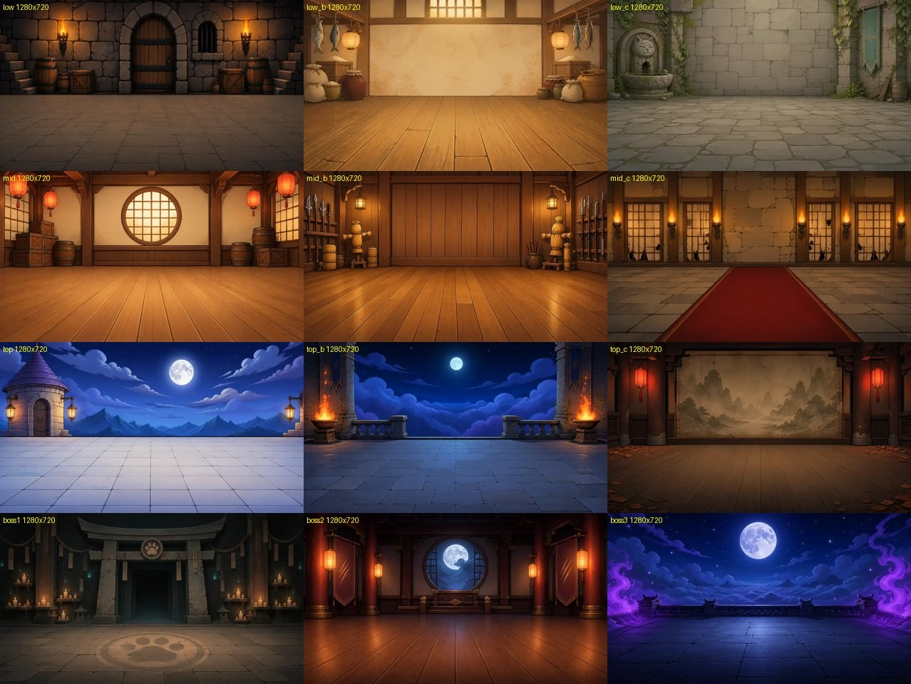
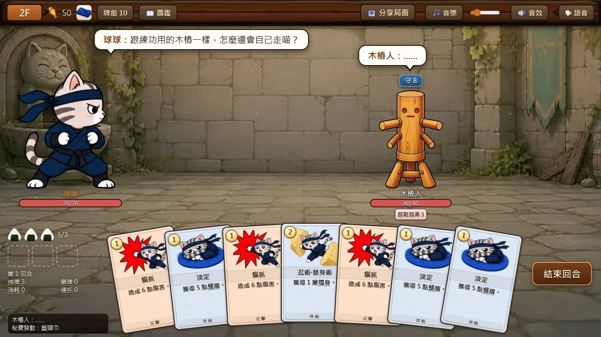
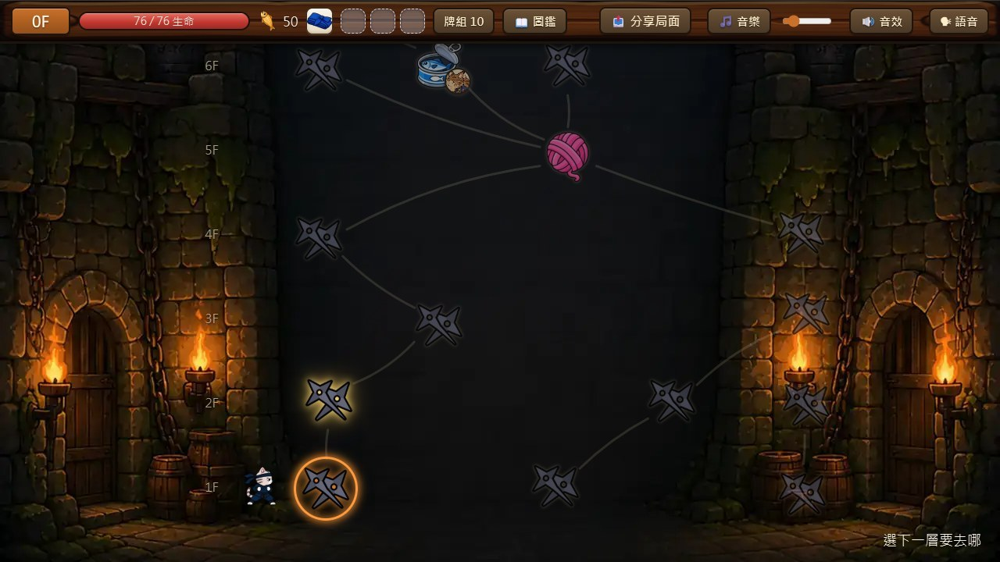
方向稿（同樣的畫風，加上光、霧、遠近）
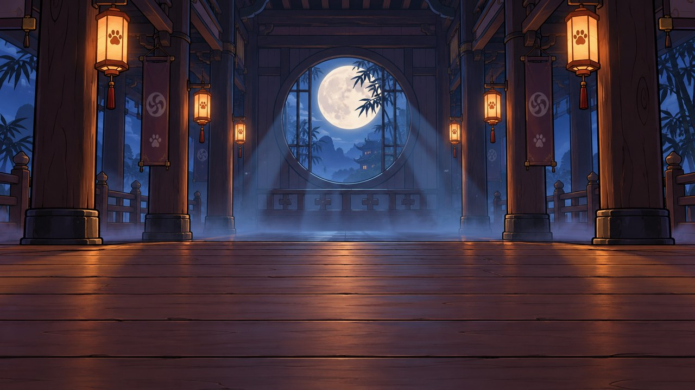
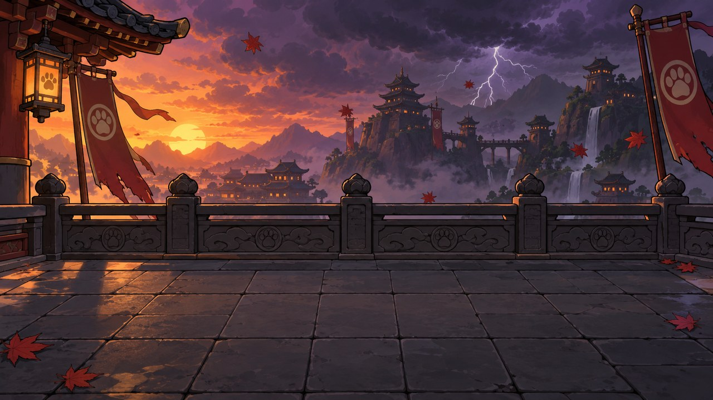
真的要做會怎麼做
- 戰鬥：每關再加 2～3 張這種有光有霧有遠近的，跟現有 9 張輪流出。現有的不刪也不換，只是輪到的機率變低。
- 地圖：中間那片黑補一層淡淡的塔內結構（樓梯、橫梁、遠處的燈），節點加光暈與底座，路線改成石階或繩梯的樣子。
- 特效照舊保留，不動。
三、按鈕
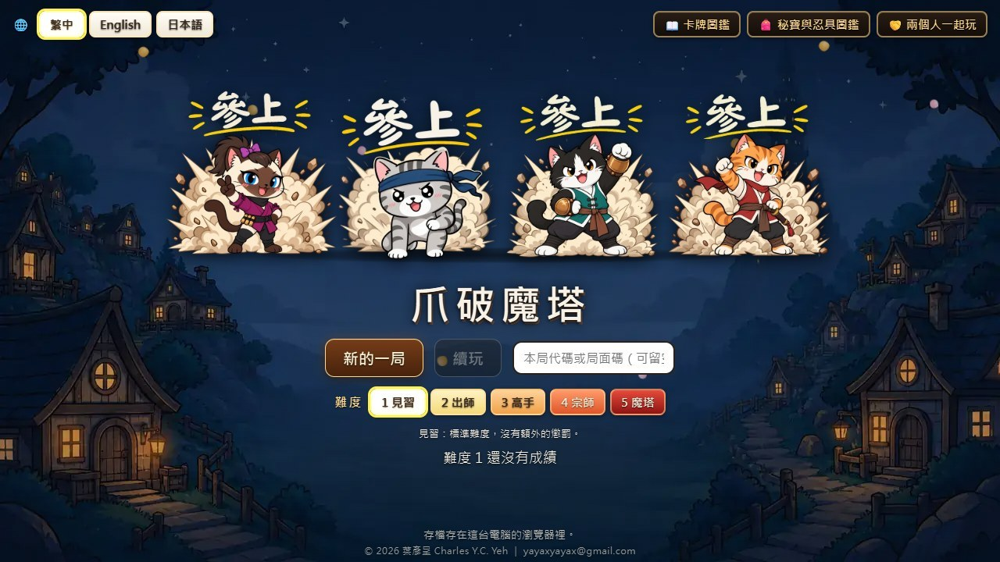
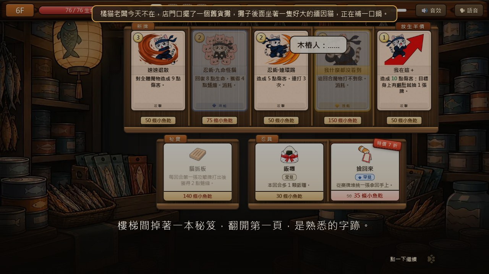
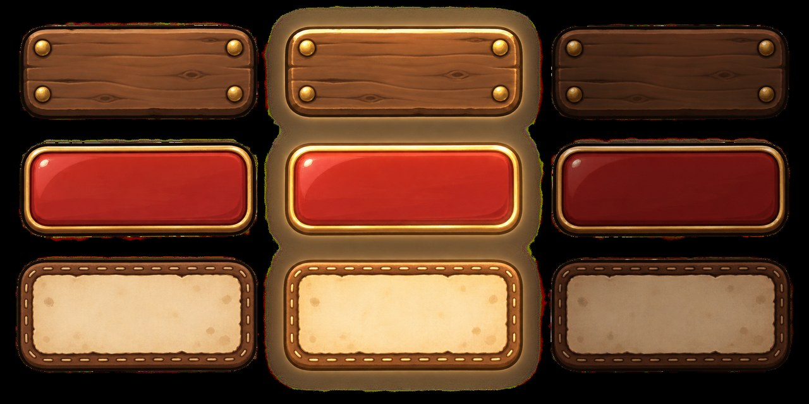
- 做法：每種按鈕切成九宮格，程式用 border-image 拉伸（遊戲裡對白框、意圖木牌已經是這樣做的），所以文字長短都放得下。
- 範圍：標題選單、選角、狀態列、結束回合、事件選項、罐頭鋪購買、結算畫面。大約三十處，一次換完才會一致。
四、我的建議與順序
| 順序 | 做什麼 | 看得到的改變 | 工作量 |
|---|---|---|---|
| 1 | 卡牌改版（底圖＋框＋橫幅＋版面） | 最大，整場都在看牌 | 約兩天：生圖半天、程式與測試一天、手機與四道門檻半天 |
| 2 | 按鈕換九宮格材質 | 整個介面質感一起提升 | 約一天 |
| 3 | 戰鬥背景每關加 2～3 張、地圖中間補結構 | 變化與氣氛 | 約一天半，生圖要挑好幾輪 |
請你決定兩件事：
- 卡牌走 A 漆器金邊、B 和紙墨線，還是混搭（例如 A 的框配 B 的紙）？
- 順序照上面（牌 → 按鈕 → 背景），還是你想先看背景？
決定之後我會在獨立的工作副本做，推上線前照四道門檻跟線上版逐一比對，現有素材一張都不動。
五、第二輪補充（你選了 A 之後）
字最多的牌放進 A 版面
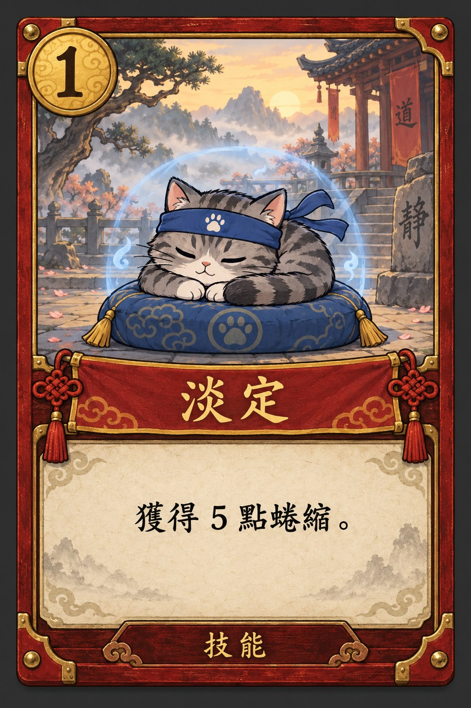
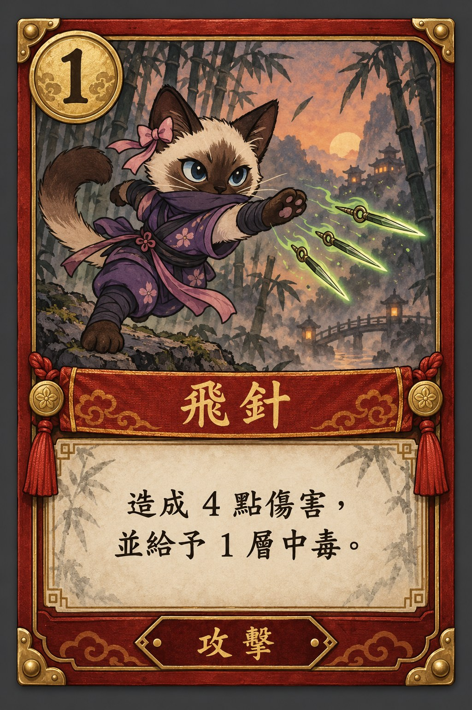
按鈕再試兩組（配 A 的漆器金邊）
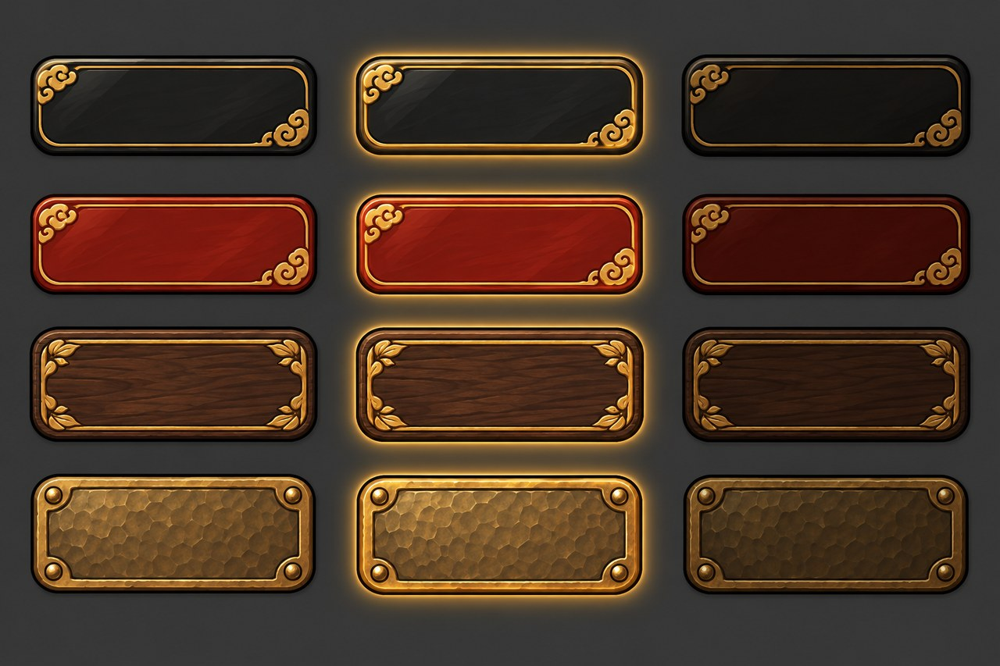
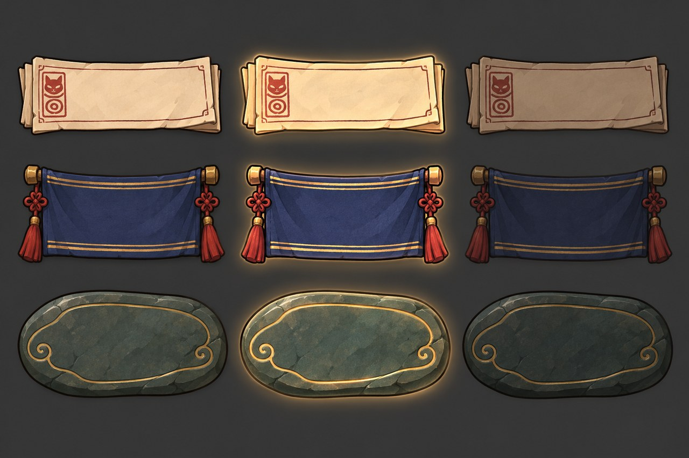